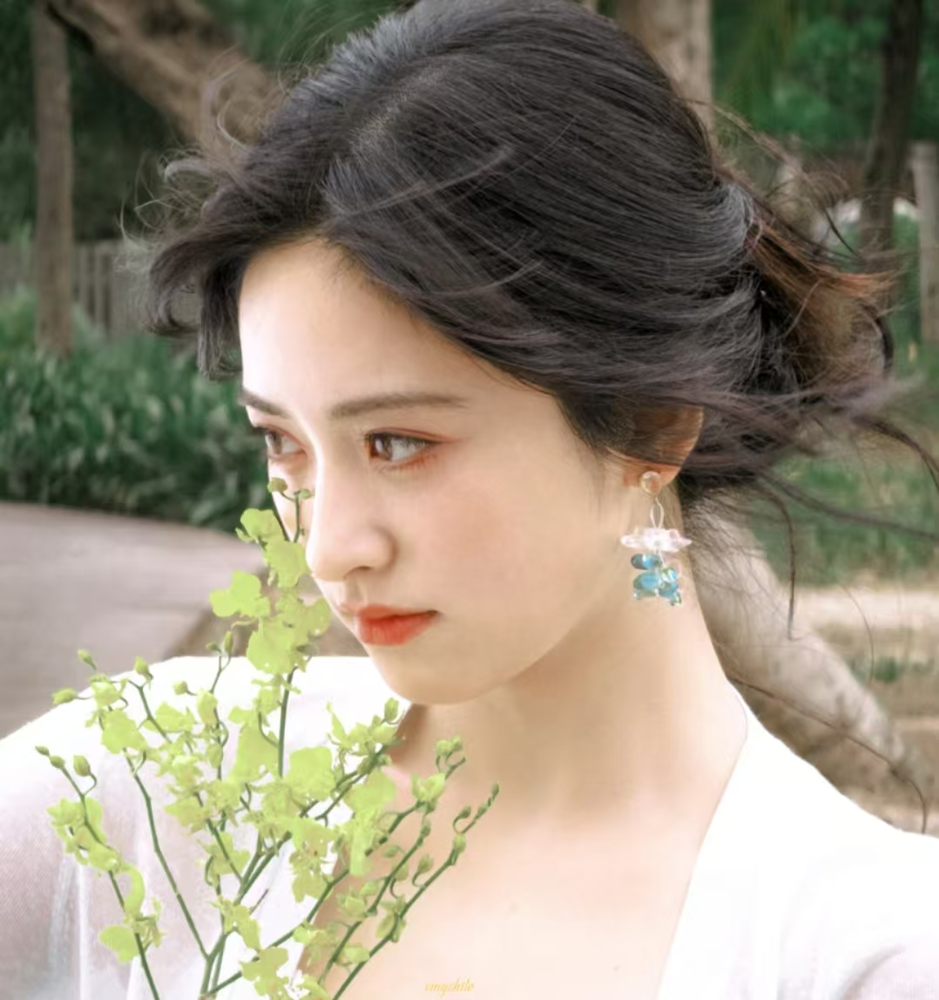

关于沈月
从平凡女孩到闪耀明星
沈月,1997年出生于湖南邵阳,中国内地女演员。她以清新自然的演技和甜美的形象受到观众的广泛喜爱。
2016年,沈月因出演科幻古装网剧《颤抖吧,阿部!》进入演艺圈。2017年,她主演青春校园剧《致我们单纯的小美好》，凭借"陈小希"一角走红，成为新一代青春偶像。
她的代表作品包括《致我们单纯的小美好》《流星花园》《七月与安生》《小夜曲》等。沈月以其真实自然的表演风格和亲和力，成功塑造了多个令人难忘的角色。
20+
影视作品
15+
广告代言
10M+
社交媒体粉丝
8+
奖项荣誉
代表作品
2017
致我们单纯的小美好
饰演：陈小希
青春校园剧,讲述了少女陈小希与学霸江辰19年间共同成长,从青梅竹马到错失后再次牵手的爱情故事。
2018
流星花园
饰演：杉菜
翻拍自经典同名剧,讲述了怀揣着把家里的家厨事业做大做强梦想的少女杉菜,在贵族学校明德学院遇见F4并与其展开一段爱恨交织的故事。
2020
七月与安生
饰演：安生
改编自安妮宝贝同名小说，讲述了"七月"和"安生"两个性格迥异的女孩,从13岁开始相识相知、相爱相杀的成长故事。
2024
失笑
饰演：顾逸
讲述了泸漂脱口秀女演员顾逸白天做社畜，晚上登台，没有远大的野心，目标就是让台下所有的观众都能笑。
2025
开画！少女漫
饰演：左千黛
讲述了理工科少女漫画家陆也奇与元气少女千黛在漫画团队中碰撞出火花，共同追逐梦想。
2023
我的反派男友
饰演：南星
奇幻爱情剧，讲述了元气满满的正能量编剧南星，因为一场奇幻的经历，与自己笔下的反派角色萧无敌相遇，并展开了一段搞笑又浪漫的爱情故事。